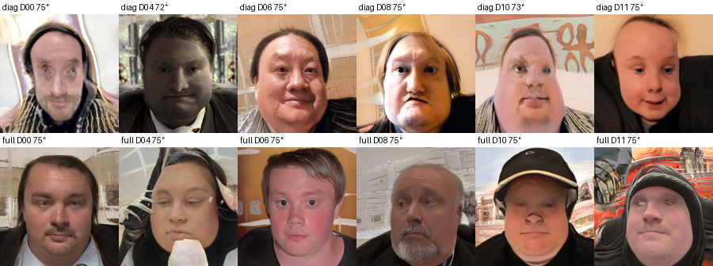
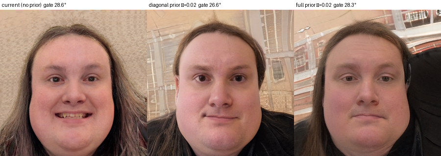
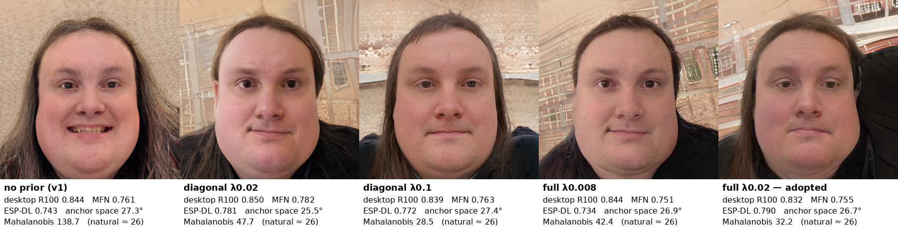
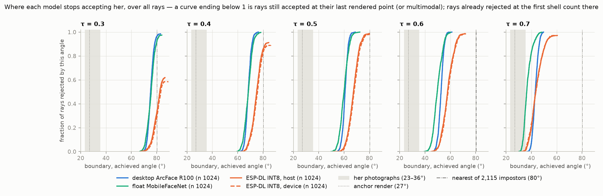

Project status
A running snapshot, told as three phases: building the apparatus, measuring with Arc2Face until the instrument itself failed the audit, and the generator that replaces it. Completed phases are folded up; the honest failures stay visible. The two notices below qualify everything under them.
The coordinate chart covers a hemisphere, and is being extended. Perturbations are built as unit(anchor + ε · tangent), which is a gnomonic projection — the tangent plane pushed onto the sphere. It reaches only cos > 0: ninety degrees sits at ε = ∞, and nothing past it has a coordinate at any budget.
No measurement is affected. For cos > 0 the chart is point-for-point identical to the great-circle form — worst difference 2.8×10−17, float rounding — so every shell ever generated already sits where the angle it records says it does. This is a change of domain, not a correction. It is also separate from the withdrawal below, which is about runs that recorded no render configuration.
The reason to extend is that the boundary search bisects in ε, which saturates exactly in the band where other identities sit, and that placing those identities on the same map as the acceptance region requires coordinates for all of them. A scan of 2,115 synthetic identities puts 55% of them beyond ninety degrees — though that figure is concentration of measure rather than a finding, since a random cloud in 512 dimensions gives 49%.
Two earlier statements on this site’s pages were artefacts of the chart rather than results: that impostors are unreachable, and that “how far toward a given person” has no denominator. With the extended chart both are well defined.
The measured figures are withdrawn pending re-measurement. The run behind them recorded no render configuration — the run table stores the backend name and nothing else, with no preset, adapter scales, steps or weight digests. Model assets were added and removed on the machine during the day those renders were made, and a re-run under a known configuration moved every one of thirteen re-tested rays in the same direction. That is more consistent with a changed rendering pipeline than with thirteen independent corrections, and no record exists that would settle it.
It cannot recur in the same way. Since August 2026 there is only one rendering recipe, so there is no wrong default left to take, and every run records the full generator configuration and the digests of the weights it opened.
The geometry is unaffected: perturbations are still exact, and the acceptance region is still direction-dependent. What cannot currently be substantiated is how far, in numbers. The ESP-DL defect findings and their upstream reports are unaffected.
Phase 1 · to 2026-08-22
Building the apparatusComplete
Everything needed to ask the question at all: exact perturbation geometry, real anchors from photographs, a renderer, and the same INT8 pipeline running both as host software (SiL) and on the silicon it ships on (HiL).
So what
“How different” is now a number. Any face can be placed at an exact angle from a person’s identity, using several of their photographs combined into one reference point. That gives a ruler for “structurally different”.
The system under test was broken, and is now fixed. The vendor’s edge model gave identical outputs for different faces because of three bugs in its host build. Once fixed it matches an independent reference exactly, and on the chip itself its boundaries move by about 1° on average (±4° across rays).
Not yet: a way to produce real images at a chosen distance. The ruler existed; the faces to measure did not.
Why it matters: before this, nobody could say how different a face must be before this system stops accepting it — the question could not even be asked.
Perturbation core & real anchors
Embeddings-first shells with exact cosine geometry — unit(anchor + ε·tangent), cos = 1/√(1+ε²) — and reproducible, index-addressable sampling. Real 512-D anchors extract from photos via InsightFace / antelopev2, the model pack pinned with a verified digest, and a shell dataset builds and probes around a real identity locally. The hemisphere limitation of this chart, and its extension, are the geometry notice above.
Edge model (ESP-DL SiL)
The “identical embeddings” bug was three upstream defects, all in the vendor’s generic C/C++ fallback path that only a host build exercises: a packed Conv filter layout the loader didn’t unpack, a PReLU kernel skipping requantisation, and a memory planner aliasing every tensor to the same offset. Two are reported upstream (#319, #320), the #319 fix is submitted as PR #321, and the third was already fixed on esp-dl’s own master. After the fixes and a bump to esp-dl v3.3.9, the runner is bit-exact against an independent int8 reference on all three models — agreement with a reference, not yet with the chip, which is what the harness below exists to close.
On-device harness (HiL)
The board speaks the host protocol over its native USB — the UART bridge tops out at 11.5 kB/s and was most of an early 10.8 s/probe ceiling; native USB brings a probe to ≈1 s. Parity is measured rather than guessed: identical pixels and identical keypoints agree to cosine 0.980–0.983; letting each side run its own detector drops that to 0.900, and the detector stays on the device anyway, because the deployed pipeline — detect, crop, embed, decide — is the measurement target. Re-measuring boundaries on the device displaced them by −1.1° ± 4.3° across 8 rays: the host SiL is a good proxy for bulk mapping, and the device is the arbiter.
Face compositor
Warped and blended a generated face into a real background photo, keeping the real hair and scene. It worked: the compositor itself was near-lossless — putting a face back into its own photo differed by at most one level per pixel.
Removed in August 2026 along with every other render-time stage that saw the original photograph. The trial result stands; what changed is where such a stage may sit. Anything conditioned on the subject’s own image belongs after the measurement, as presentation, not inside the render being measured.
Phase 2 · 2026-08-22 → 2026-08-23
Measuring with Arc2FaceClosed — generator retired
The first surfaces were measured, and then the instrument was put under the same scrutiny as the system it measures. Most of what this phase produced survives — the threshold band, the perceptual results, the parity numbers. The headline surface figures are withdrawn (notice above); measured surfaces now exist again under full provenance — experiment 16 on the Explorer — while the earlier figures remain withdrawn. The phase ends with a verdict on the renderer itself.
So what
A system can look perfect and still be loose. Every threshold from 0.27 to 0.60 gives zero errors on her photographs and on 1,164 strangers, yet across that range how far the system accepts altered versions of her swings from a tight region to one it barely bounds. The usual error rates cannot see this.
Deployment loosens acceptance. The edge pipeline accepts faces about 4.5° further out than its float counterpart on the same images, and the chip agrees with the host simulation.
The first generator could not make a face “N degrees different” reliably. Its settings copied her original photograph into the renders, so it measured the same photo relabelled rather than a different face. Once cleaned, asking for 20° gave about 46°, with about 7° of noise, and the first surface figures were withdrawn.
Not shown: a reliable size for her acceptance region — the first figures were withdrawn, and their re-measured successors are limited by the generator’s 7° noise.
Why it matters: the tool that generates the altered faces has to be tested as rigorously as the system under test, or you are measuring the generator. That is why the work moved to StyleGAN3.
The measured surfaces
A 20-ray pilot, then all 64 directions bisected against the SiL around one real identity (Dr James’): 51 usable rays, boundary angle 37.7° ± 13.3°, anisotropy 7.6× — a star, not a circle. Two analysis bugs were caught on the way, both of which had made the result look more dramatic than it is: rays decided on two evaluations drove a spurious 30× ratio, and detection failures plotted as scores of zero drew fictitious “identity cliffs”. Then the run’s real defect surfaced — no render configuration was recorded — and the figures were withdrawn pending re-measurement. The acceptance region is still direction-dependent; what could not be substantiated was how far, in numbers. See the Explorer for the full chain.
Re-measured 2026-08-23 under full provenance — preset, weight digests and per-render detection all recorded. Twelve directions, boundaries in achieved degrees: the deployed pipeline bounds 9 of 12 rays at 37.7–54.5° (spread 16.7°, ratio 1.44×), with 3 rays still accepted at the 60° grid edge (censored — a lower bound, not a boundary), and runs +4.5° looser on average than its own float parent scored on identical crops: acceptance moves outward through INT8-plus-detector deployment. Device HiL boundaries sit on the SiL’s. These are the successor figures — see experiment 16, including a τ-swept interactive — and the earlier figures remain withdrawn.
The threshold band & enrolment
Any decision threshold between 0.269 and 0.602 gives zero false accepts and zero false rejects on this subject’s nine photographs and 1,164 synthetic impostors — and across that flat, perfect band the acceptance region goes from “95% of directions still accepted at the edge of the corpus” to “a bounded star averaging 28.8°”. An operator tuning against FAR and FRR alone sees nothing changing underneath. Also settled: anchoring on the centroid of several photographs beats a single image by +0.115 leave-one-out and widens the impostor margin from +0.462 to +0.623, so the centroid stays.
Do the renders look like the person?
The recognition model said the renders were more like the subject than her own photographs are like each other; the subject did not see herself in them. Forced choice with the reference visible settled the direction: 16 of 16 subject-targeted trials correct, including an observer who had never met her — above stranger-level identity signal, below felt likeness, and a floor rather than a ceiling. The public version is 2.6× harder and measures human accuracy as a function of embedding distance. The subject is also not poorly represented: her renders sit at the 50th percentile of 20 comparison identities.
Rendering (Arc2Face)
Ten presets became one. The audit that followed the withdrawal found that every preset except pure_math conditioned the render on the subject’s own photograph — ControlNet on its structure, IP-Adapter on its identity, SMIRK on its expression — which measures how far the embedding can move while the render is still structurally that photograph: the wrong question. Two presets were byte-identical configurations under different names. The machinery was deleted, not just the preset entries, so the silent-default contamination behind the withdrawal cannot recur.
The one remaining recipe was then characterised as an instrument, on 1,330 renders through the clean measurement path with full configuration recorded (these renders post-date, and are not subject to, the withdrawal above): achieved θ = 0.644 × target θ + 33.6°, r = 0.867, residual sd 6.9°. Ask for a face 20° from the anchor and you get one about 46° away. The offset and the compression are correctable bias; the 6.9° spread is the instrument’s noise floor, and it bounds how precisely any boundary can be placed — ≈4.0° with 3 renders per point, ≈3.1° with 5.
The verdict (2026-08-23): Arc2Face is not capable of what the measurement needs. Only 14 of 40 of its native renders survive the vendor detection threshold even under honest conditioning, on top of the offset and the noise floor. It remains the characterised baseline — every judge and the boundary extraction are renderer-agnostic — and the stimulus generator moves to StyleGAN3, Phase 3 below.
A residual leak, recorded
The cleanup left one leak in place, on purpose and on the record. The anchor’s reference image is picked best-of-8, and 35% of that selection weight is resemblance to the subject’s own photograph — in embedding and in pixels. That is the deleted presets’ leak moved from the diffusion stage into the selection stage. It is confined to the reference image: the measurement path renders exactly one image per (embedding, seed), no candidate ranking, no re-render on a low score, and which renders are kept is decided by detection, never by similarity. The condition for fixing it is named — before the reference path is used for anything load-bearing, the selection must be reduced to its target term and re-characterised rather than assumed harmless.
One pixel buffer
Three code paths fed the same model three differently prepared images; on eight renders one path found 8 faces at 0.79–1.00 and another found 2. Six detectable faces would have been recorded as rejections, and host-versus-device parity would have been confounded with resolution. The buffer is now prepared in one module used by every ESP-DL path, and after unification SiL and HiL agree on 8/8 detections with a mean score delta of −0.0017 (max 0.0139, n=3) — against previously documented disagreement of ≈1.4 px on landmarks and ≈0.19 on score. The full device pass over the same 1,330-render set has since completed on the board, and the comparison is measured. Row-for-row: detection agrees on 1,328 of 1,330 (99.8%; two SiL-only detections, no HiL-only). Over the 533 co-detected probes the mean score delta is −0.00034 with sd 0.023, no systematic bias in either direction. Accept decisions at the vendor τ agree 527/533, with all six flips between 0.479 and 0.534 — borderline probes inside the rounding noise, not disagreements about an identity.
The comparison that matters is at boundary level, because boundaries are the deliverable: the same extraction over both judges’ rows classifies all 12 rays identically (the same 9 bounded, the same 3 censored-right), and over the 9 co-bounded rays the boundaries differ by mean +0.46°, sd 0.98°, max 1.72° — an order of magnitude inside the renderer’s 6.9° residual. Host-computed boundaries describe the silicon. One scope caveat, kept deliberately: this was measured on Arc2Face renders, and the framing experiment below proves the detector is image-distribution-sensitive, so it does not yet license computing StyleGAN3 curves host-side — a 50–100 render HiL spot-check is owed when the first SG3 calibration set exists.
Detection is framing-sensitive
FFHQ-tight framing — the framing every StyleGAN output has by construction — is found by the detector 37 of 40 times at threshold 0.1 with refinement scores around 0.999, and does not exist at the vendor 0.5: 0 of 40. The proposal stage gates on framing; the scoring stage doesn’t see it. Resolution is irrelevant (512 versus 1024 changes nothing in either direction), and a 50% pad partially restores vendor-threshold detection — a presentation transform, applied after the identity is fixed, parameters recorded per render.
Two consequences. The record that retired StyleGAN from this project months ago — a 100% detection failure — was never evidence: it scored the reconstruction and the real photograph it was compared against at the same constant 0.531209, the identical-embeddings SiL defect since fixed, measured through a pipeline since deleted. And Arc2Face’s own vendor-threshold losses (14/40 native) are partly framing, previously attributed wholly to render quality.
Phase 3 · one identity
StyleGAN3, the W-walkClosed 2026-09-17
The adopted stimulus generator, with its requirements stated up front. The anchor inversion gate has passed, the grid has been walked out to where the face gives out and back, the inversion’s noise has been traced to its cause, and the walk is on film in the explainer’s own picture. The three design decisions are taken, the first boundary has been measured through it on twelve rays by four models and checked on the device, and the grid of record — 1,024 rays — is rendered and judged: at the vendor threshold the deployed pipeline accepts her out to a median of 67.4°.
So what
The method works. Her photographs are converted into the generator’s own representation once (inversion); faces are then moved away from that point in controlled steps (perturbation); each face’s actual difference is measured to within 1° and tested on the deployed pipeline. Her photographs fix only the starting point; no altered face is conditioned on them.
The deployed face unlock lets in far more than her own photographs. It still accepts altered versions of her 30–45° further from her than any real photo sits — a broad region, not a tight fit around her face.
The edge model is looser and more uneven than desktop models. On the same images the INT8 pipeline accepts about 7° further out, and by how much depends strongly on the direction of change.
The weak spots cannot be reasoned out. Direction predicts the looseness only weakly, and the one attempt to predict the weakest direction failed. They have to be measured.
The simulation stands in for the chip. Host and device agree to about 0.4°, so large studies can run on the host.
Not shown yet: that a stranger could get in — no direction reaches as far as the nearest stranger sits, but nobody has walked the path towards one — or that any of this holds for anyone but her. That is the next phase.
Why it matters: a desktop model and a single threshold do not describe an edge face-unlock system; its acceptance region has to be measured on the deployed pipeline, direction by direction.
The design
Invert the identity anchor to W once — the only place a photograph enters the pipeline — then perturb W directly and render G(w) per sample: w = w_anchor + α·d, pad (recorded), detect, judge, with every judge and the boundary extraction unchanged.
What it buys, in the order it matters: every point in W renders a face, so the reachability problem that forced the hemisphere analysis disappears — sampled set equals reachable set, by construction. ≈50 ms per render against ≈11 s, so a 1,330-render set takes about a minute rather than four hours. No per-probe optimisation, so no judge circularity — ArcFace models touch a probe only when measuring it. And G(w) is deterministic, so the seed axis collapses — a gain, since seed effect dominated θ effect in the pilot (0–78% against 8–33%), though the spec now has to say where within-point variance comes from instead of pretending it is still sampled.
What it must record
The costs, stated as requirements rather than caveats. W → ArcFace is nonlinear and per-identity, so an even spread in W arrives distorted on the ArcFace sphere: the achieved ArcFace direction and magnitude are recorded per probe, and boundaries are reported only in achieved ArcFace coordinates, never in α or W units. The padding stage stays mandatory and recorded per render — FFHQ-tight framing fails the vendor detector by default, per the framing experiment above — though the first real renders detect unpadded (below), so it is insurance rather than rescue. Cross-identity anisotropy is treated as generator-confounded until a two-generator control (same identity, same rays, both renderers) has run. And the anchor gate stays: the rendered w_anchor must re-embed near the centroid and detect on ESP-DL before any ray is walked.
In flight
The anchor inversion gate has passed. The inverted anchor’s render sits 28.5° from the centroid in anchor space, against the 37.6° bar set by Arc2Face’s own anchor renders — reached in three steps: 69.8° with the VGG perceptual loss alone, 35.1° adding a single-photo identity proxy, 28.5° targeting the nine-photo centroid. That is within 2.2° of the best source photograph’s own distance (26.3°), and closer to the centroid than eight of the nine photographs. Real SG3 renders also detect on ESP-DL at the vendor threshold unpadded — generated hair and background survive framing far better than the gray-border proxy suggested.
The calibration sweep has now run — the W-walk’s first transfer map, 96 probes over 12 random unit W-directions × 8 alphas from the gated anchor: achieved θ = 0.889°/unit × α + 26.6°, r = 0.939, residual sd 1.59° against Arc2Face’s 6.9° — 4.3× tighter. The yield problem is gone: every probe embeds, and detection at the vendor threshold holds 12/12 through α=12 (9/12 at α=16), where Arc2Face managed 14/40 on native renders. Median θ walks from 28.6° to 42.4° across the grid. One honest caveat: α=16 reaches only about 45° while the SiL boundaries sit at 38–54°, so the production grid needs larger α — and no boundary has been measured through StyleGAN3 yet. The phase stays in progress, and Arc2Face stays available as the characterised baseline the two-generator control needs.
The grid was then pushed (2026-09-15): every integer α from 1 to 32 — about 1° of achieved angle per step, all 385 renders detected through a recorded 25% padding — and on to 80, which found the edge of the generator’s face manifold rather than more angle: past α≈48 the slope collapses, the angle saturates near 75–90°, steps run backwards by up to 16°, and the renders stop being faces. Two further things came out of the same afternoon. A target angle can be requested rather than walked to: each direction’s measured curve predicts the α, the render is measured, one or two corrections land it within 0.5°. And the high-frequency noise visible on the inversion turned out to be distance from the generator’s own distribution — the anchor sat 87 σ-norm from the mean where natural samples sit at 22–26 — which a prior on the inversion removes. From a regularised anchor the walk has to be whitened, α in units of the pinned W statistics, and walked that way with the full covariance it reaches 75° on all twelve directions as plausible faces (60/60 targets in 105 renders) where the raw walk could not. Three decisions followed: which regularised anchor to adopt, since it re-bases every sweep so far; walking in whitened W with angle targeting; and which off-distribution number becomes the recorded gate.
All three are now taken (2026-09-16). The gate is the detector edge per ray: two consecutive target shells where the render stops embedding or the deployed detector stops finding a face, measured at α 24–37 and Mahalanobis 38–48 on the twelve directions, all beyond 81° — late, which makes it a hard upper bound rather than a realism judgement. With that gate in place the first boundary was measured through StyleGAN3: twelve rays, target shells 30–85°, one deterministic render each, the judges and the boundary extraction unchanged. At the vendor threshold every ray is bounded, median 66.0° achieved (58.8–75.5°), every boundary inside its ray’s detector edge; the device agrees to +0.7° mean (sd 1.9°) over 142 renders, with a first distribution-dependent offset of +0.03 in score at the 85° shell, recorded at n = 10. The anchor was chosen last, after the candidates were scored on every identity model available — a desktop-class ArcFace R100, MobileFaceNet, the deployed INT8 pipeline and the anchor space itself, each against the subject’s own photographs. Identity did not separate them: every candidate scores as one of her photographs does against the others, on every model, and the differences are one to two times the presentation noise. Distance from the generator’s distribution did. The full-covariance prior was adopted, with the fully whitened walk, giving up about 0.02 of desktop-model score for the anchor nearest the distribution and the walk that holds to 75°. The grid of record then runs on 1,024 directions — two full orthonormal bases of W, index-addressable so any prefix is the smaller set — rendered in batches that pause and continue, each batch judged as it lands. Twelve was a default; the direction-structure analysis is rank-limited to the number of rays, and 512 is the dimension of the space. The Explorer will carry the chain once the first batch is judged.
The walk, on film
The acceptance sphere explainer puts the identity at the centre, accepted faces inside, rejected outside, an ideal system as one crisp radius against a ragged measured surface. These films draw real StyleGAN3 sweeps in that same picture. Every probe sits at a radius equal to its achieved angle to the anchor centroid — the measured quantity, exact — and on a heading given by where its achieved direction falls on the sweep’s three principal axes, a sketch of “which way” whose share of the variance is printed on the frame. The dashed sphere is the ideal radius at the M2 mean boundary of 44.3°. One direction is picked out in yellow with its previous, current and next points marked, and its render sits in the corner. Blue points detected on ESP-DL at the vendor threshold as rendered; orange did not. On the raw-W grid every one of those was framing and the recorded padding restored all 385; on the fully whitened walk padding restores all of them through α = 12 and most, not all, at the top of the range (10 of 12 at α = 24) — the reason the walk needs a recorded manifold gate before boundaries are measured through it.



Four boundaries, on 1,024 rays
The grid of record, every ray judged by four models on the same renders: a desktop-class ArcFace R100, a float MobileFaceNet, and the deployed INT8 pipeline on the host and on the device — 11,667 renders, each scored five times. At the vendor threshold the deployed pipeline accepts her out to a median of 67.4° (95% interval 67.1–67.7°, over rays), with half of all directions between 64.5° and 70.2° and the extremes at 52° and 80°. Her own nine photographs sit 23–36° from her centroid. The desktop model’s boundary is the roundest (60.8°, standard deviation 2.2° across rays), the float MobileFaceNet’s less so (59.8°, 3.4°), and the INT8 pipeline’s the most uneven (4.2°), and the unevenness grows as the threshold tightens. The device reproduces the host ray by ray: +0.4° on average (sd 2.0°, correlation 0.88). At the vendor threshold no direction is accepted as far out as the nearest of 2,115 synthetic strangers sits (80°); at 0.4, 73 of 1,024 are.
What the numbers do not say. The INT8 pipeline sits about 7.5° further out than the float MobileFaceNet and follows it ray by ray only loosely (correlation 0.53), but that is a pipeline against a float reference on the same crop, not quantisation of the same weights: whether the ESP-DL network is that MobileFaceNet quantised is unverified, and the pipeline runs its own detector. The desktop model is the reference, not an ideal system: the angles are measured with an ArcFace model, so its near-round boundary is partly the ruler measuring itself. One threshold across models whose scores are not on a common scale makes the radii threshold-relative. And the stranger comparison is radius against radius: each stranger lies in its own direction, and how close a path towards one comes has not been measured yet. The boundary is weakly predictable from the direction (held-out correlation 0.23), and rays whose faces change in similar ways have similar boundaries.

Phase 4 · current
The populationNext
The same measurement across a cohort of synthetic identities, and the cross-identity statistics the method was designed for. The procedure is written down from Phase 3; the cohort’s construction is being decided.
The through-line
- The perturbation stays in identity space at known amplitudes — that's what makes a boundary crossing meaningful.
- Realism is for communicating with humans; the device crops to the face, so the surface it maps is unaffected by the surrounding scene.
- Nothing but the identity representation may condition a render — the rule Phase 2 ended up enforcing, and the reason the instrument is audited to the same standard as the system it measures.